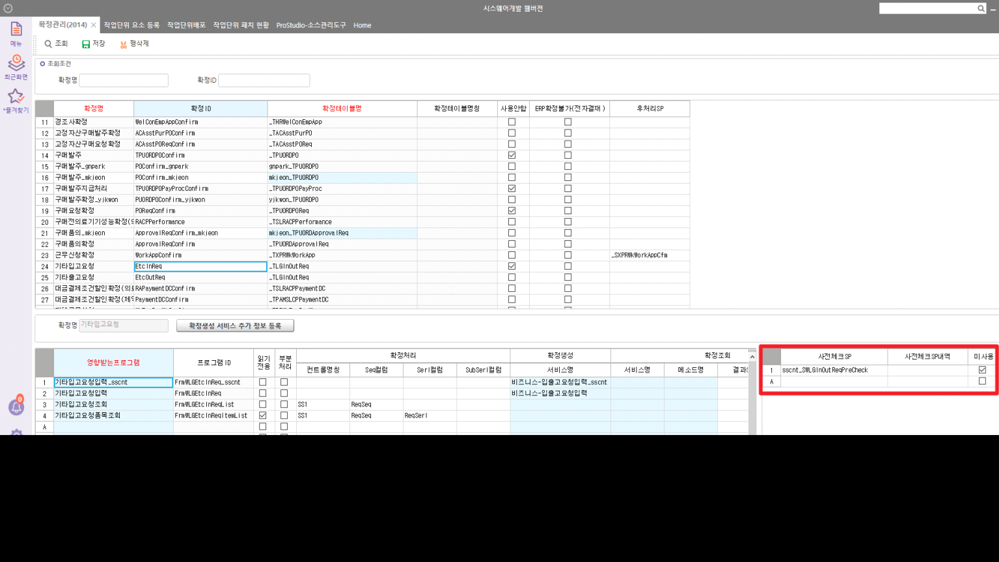
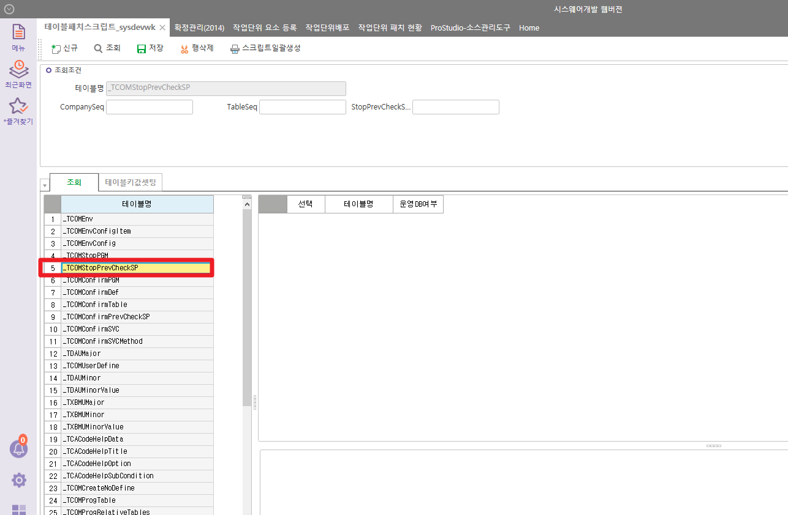

확정 사전체크 sp
DROP PROCEDURE das_SWPJTSVCProjectConfirmCheck
GO
CREATE PROCEDURE das_SWPJTSVCProjectConfirmCheck
@CompanySeq INT = 1,
@ConfirmSeq INT = 0,
@UserSeq INT = 0,
@LanguageSeq INT = 1
AS
DECLARE @MessageType INT,
@Status INT,
@Results NVARCHAR(250)
CREATE TABLE #BIZ_OUT_DataBlock1(
Result NVARCHAR(100)
,MessageType INT
,Status INT
,WorkingTag NCHAR(1)
,SVCSeq INT
,PJTSeq INT
)
INSERT INTO #BIZ_OUT_DataBlock1(Result, MessageType, Status, WorkingTag, SVCSeq, PJTSeq)
SELECT '' AS Result
,0 AS MessageType
,0 AS Status
,'D' AS WorkingTag
,A.CfmSeq
,C.PJTSeq
FROM #TCOMConfirm AS A
JOIN das_TPJTServicePJTItem AS B ON B.CompanySeq = @CompanySeq
AND B.SVCSeq = A.CfmSeq
JOIN _TPJTProject AS C ON C.CompanySeq = B.CompanySeq
AND C.PJTNo = B.SVCPJTNo
WHERE A.Status = 0
AND A.CfmCode = '0'
IF EXISTS (SELECT 1 FROM #BIZ_OUT_DataBlock1 WHERE WorkingTag = 'D')
BEGIN
EXEC _SWCOMCodeDeleteCheck @CompanySeq, @UserSeq, @LanguageSeq, '_TPJTProject', '#BIZ_OUT_DataBlock1', 'PJTSeq'
END
UPDATE A
SET Result = REPLACE(B.Result,'삭제','확정취소'),
MessageType = B.MessageType,
Status = B.Status
FROM #TCOMConfirm AS A
JOIN #BIZ_OUT_DataBlock1 AS B ON B.SVCSeq = A.CfmSeq
WHERE A.Status = 0
AND A.CfmCode = '0'
AND B.Status \<> 0
RETURN
--GO
--EXEC _SWCOMConfirmProc N'1',N'1',N'27292',N'128410304',N'51',N'',N'',N'0',N'0',N'0'
테이블 : _TCOMConfirmPrevCheckSP
sp 예시 : sd_SWSLDVReqPreCheck / hct_SWSLDVReqPreCheck
업체 ERP에서는 사전체크SP, 사전체크SP내역은 기입이 안됨
-
두 컬럼 입력,미사용 체크
-
SP, 테이블스크립트 패치 (단순히 SP 명만 가져가기 때문에, 꼭 패치로 할 필요는 없다)
-
업체 ERP 가서 미사용 해제


DROP PROCEDURE sd_SWSLDVReqPreCheck
GO
CREATE PROCEDURE sd_SWSLDVReqPreCheck
@CompanySeq INT = 1,
@ConfirmSeq INT = 0,
@UserSeq INT = 0,
@LanguageSeq INT = 1
AS
DECLARE @MessageType INT,
@Status INT,
@Results NVARCHAR(250)
-- 이미 진행된 공용창고->부서창고 이동처리 존재시, 공용수량 수정 불가
UPDATE #TCOMConfirm
SET Status = 99999,
Result = '이동처리 되지 않은 공용창고이동수량이 존재합니다.'
FROM #TCOMConfirm AS A
JOIN _TSLDVReqItem AS B WITH(NOLOCK) ON B.CompanySeq = @CompanySeq
AND A.CfmSeq = B.DVReqSeq
LEFT OUTER JOIN _TLGInOutDailyItem AS C WITH(NOLOCK) ON B.CompanySeq = C.CompanySeq
AND B.DVReqSeq = C.Dummy9
AND B.DVReqSerl = C.Dummy10
AND C.InOutType = 80 -- 이동처리
WHERE B.CompanySeq = @CompanySeq
AND A.Status = 0
AND A.CfmCode = '1'
AND ISNULL(B.Dummy9,0) \<> 0
AND C.CompanySeq IS NULL
RETURN
go
--_SWCOMConfirmProc_Ttest N'1',N'1',N'186',N'500593',N'240',N'',N'',N'1',N'0',N'0'